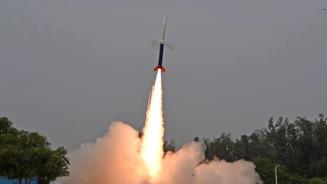

The Vikram-S rocket named after the father of India's space programme Dr Vikram Sarabhai launched on Friday from the Indian Space Rese
First privately developed Indian rocket Vikram-S being launched from the Satish Dhawan Space Centre in Sriharikota, an island off the coast of Andhra Pradesh.(AFP
The half-tonne Vikram-S rocket launched before midday and travelled in an arc.(AFP)
Union MoS for Science and Technology Jitendra Singh with ISRO Chairman S. Somanath, INSPACe Chairperson Pawan Goenka and Skyroot Aerospace co-founders Pawan Kumar Chandana and Naga Bharath Daka.(PTI)